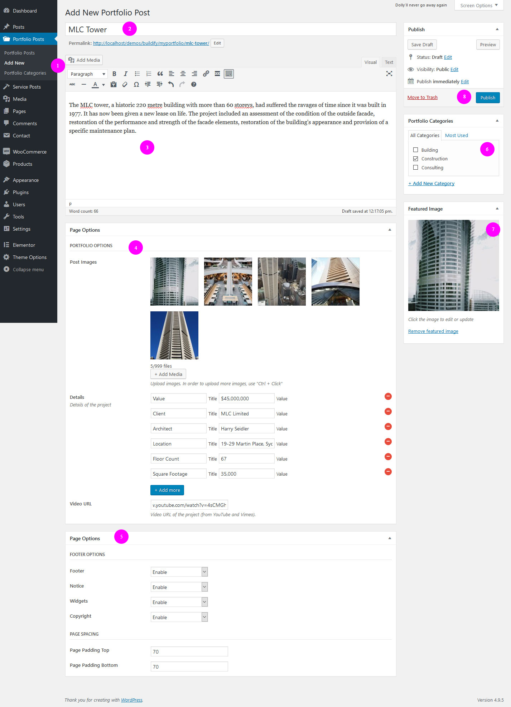
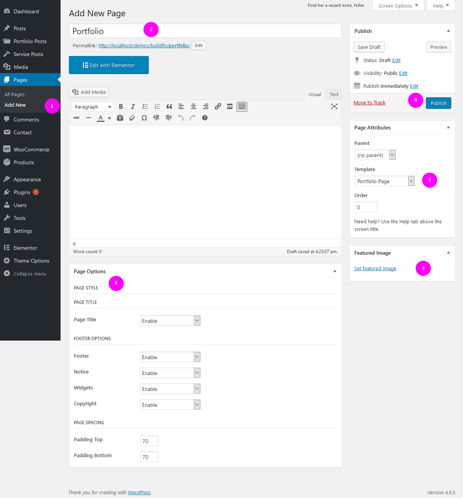
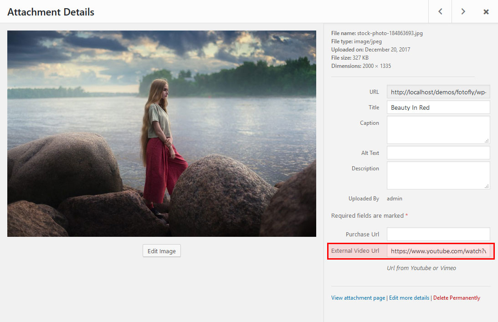
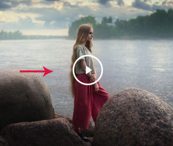
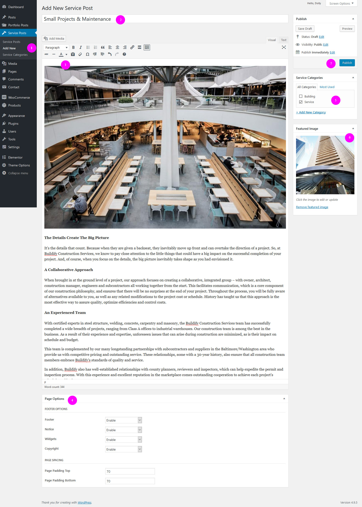
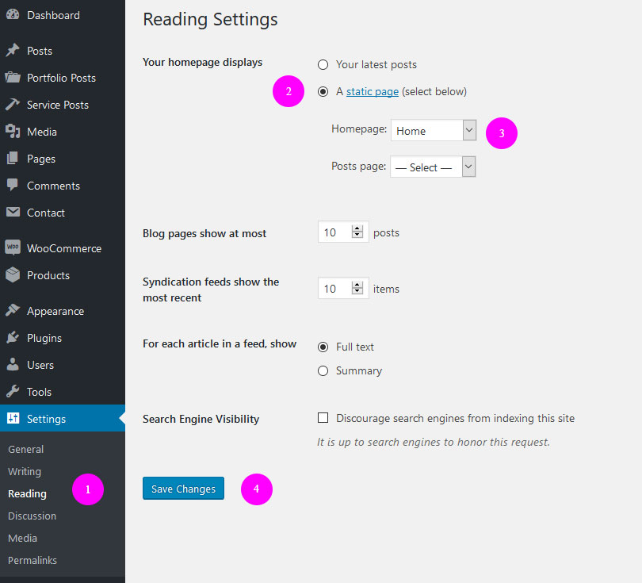
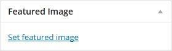
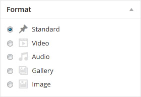

Cron - Industry WordPress Theme
- Created date of Documentation: Sep - 04, 2019
- Latest update of Documentation: Sep - 04, 2019
- By: Frenify
First of all, Thank you so much for purchasing this template and for being our loyal customer. You are awesome!
This documentation is to help you regarding each step of customization. Please go through the documentation carefully to understand how this template is made and how to edit this properly.
A working version of WordPress.org must be installed before you can install the Cron. If you need help installing WordPress, follow the WordPress Codex
Before using any theme, it is important to understand how native WordPress functions work, and how to establish ownership of your new site.
WordPress links you will find useful:
To use Cron WordPress Theme, you must be running WordPress 4.9.5 or higher, PHP 5.6 or higher, Elementor Page Builder 2.0.3 or higher and mysql 5 or higher version. Below is a checklist of items your host needs to comply with to ensure proper Cron operation:
- Ensure your web host has the minimum requirements to run WordPress.
- Make sure the latest version of WordPress is up and running.
- If necessary, you can download the latest release of WordPress from the official WordPress website.
There are two methods to install the theme. If the normal installation method (a) is not supported by your web host, you will have to use the alternate option (b).
a) Normal Installation
-
Login to WordPress Admin and browse to Appearance > Themes.
-
Click on the Add New Theme (or "Install Themes" tab for older versions) and click Upload.
-
Browse your computer to select "cron.zip" (it's in the zip file you downloaded from ThemeForest). Click "Install Now" button.
-
Once it's uploaded, click the Activate link.
b) FTP Installation (alternate method)
-
Use your FTP software to browse to wp-content/themes folder.
-
Upload the cron folder.
-
Once it's uploaded, go to your WordPress Admin, browse to Appearance > Themes.
-
Click the Activate link.
Important: After activation, you will be presented with cron-core plugin that you should activate. Do not forget to activate it or not all of the theme features will be available.
Note: If you are migration from a theme which used the native featured images functionality of WordPress. Please use the
Regenerate Thumbnails plugin to resize all the thumbnails. Click the link above and download the free plugin, and read through the steps it contains, it has all the information you need. Run it from
Tools > Regen. Thumbnails.
PHP Configuration limits
Issues you may encounter, such as demo content fails when importing and similar issues, are generally related to excessively low PHP configuration limit settings. You can either increase these limits on your own, or contact your web host and ask to have the limits increased to the following minimums:
- memory_limit - 96M
- max_input_vars - 3000
- max_execution_time - 120
- post_max_size - 32M
- upload_max_filesize - 32M
- allow_url_fopen - ON
Verify your PHP limits
You can check them by installing the WordPress phpinfo() plugin and checking Settings. The first column refers to your installation value, and the second column refers to the limits of your host. The latter values are often lower if you have selected a cheaper hosting package.
You can always contact your host to ask what the current settings are, and have them adjusted if necessary. Some hosts will try to keep PHP limits low to conserve resources. Since are paying for those resources, you should rightfully expect to be getting your money’s worth.
Demo Content Import (optional)
We highly recommend against using this method in production. Please only use on an extra copy for testing or experimenting. This method most likely will fail on shared web hosts. Uncheck "import attachments" option if it fails and try again.
-
Log into Admin and go to Tools > Import > WordPress.
-
Install the WordPress importer.
-
Install Elementor Page Builder.
-
(optional) If you want to use "Woocommerce" and "Contact Form 7" plugins, just install plugins before upload xml file.
-
Select the cron.wordpress.xml (located in the main zip file in "xml" folder) and upload it.
-
On the next screen, under Assign Authors, select or enter a new username for each author.
-
(optional) check or don't : "Download and import file attachments". It will just download placeholder images that you have to change anyways.
-
Please be patience as it will take quite some time. Do not interrupt it.
-
(optional) Once it's done, go to Appearance > Menus > Manage Locations. Select "Main Menu" next to "Main Navigation".
-
(optional) Go to Edit Menus on the same page, select "Main Menu (Main Navigation)" from menus to edit and click Select. Click to expand Features and select Mega Menu for Links under Mega Menu.
-
(optional) Setup your homepage to "Main Homepage" by following the Homepage Setup section.
-
All Done.
Important: Please do not import content on a WordPress installation that already has a lot of content. Or the very least, make a backup first. A catastrophic mess can be created.
In some cases you would like to remove demo content. You can remove all posts, pages, etc using WordPress Reset plugin. Be aware that this plugin resets the WordPress database back to it's defaults. Deletes all customizations and content. It does not modify files only resets the database.
- Portfolio Posts -> Add New
- Insert Title
- Insert Some Description (optional)
-
Portfolio Options:
- Post Images - Upload some images. (Suggested Minimal Image Size: 2000x2000)
- Details - Add details of portfolio.
- Video URL - Add Video URL of portfolio from youtube or vimeo.
-
Page Options:
- Footer Options - You could enable/disable footer for a single post page.
- Page Spacing - Set top and bottom space options.
- Attach your post to any category (Add some categories first, if you don't have any)
- Set Featured Image (Required) - This is used as Coverage of Post everywhere in the theme. (Suggested Minimal Image Size: 2000x2000)
-
Publish :
- Visibility (optional) - Change that option to Password protected if you want to hide your post from public
- Click the "Publish" button

VIDEO TUTORIAL
Before setup portfolio page, we suggest you to add some portfolio posts.
First Step - See Below Image
- Pages > Add New
- Insert Title
- (Required) Choose "Portfolio Page" from Template, inside "Page Attributes" box.
- Page Options - Change these options as you wish
- Add Featured Image (optional)
- Click the "Publish" button

It is possible to attach an external video ( gil.e. YouTube, Vimeo ) to a photo so that when you click on that photo at the gallery to see the enlarge photo at the lightbox gallery viewer, it will load the video instead.
You just simply need to add the URL of YouTube/Vimeo video to that image in the media library.

Just visit portfolio post page that uses that photo, you will see a play icon is added to that thumbnail. If you click on that photo, it will load the video.

Popup Video :
VIDEO TUTORIAL
- Service Posts -> Add New
- Insert Title
- Insert Content
-
Page Options:
- Footer Options - You could enable/disable fotter for a single post page.
- Page Spacing - Set top and bottom space options.
- Attach your post to any category (Add some categories first, if you don't have any)
- Set Featured Image (Required) - This is used as Coverage of Post everywhere in the theme. (Suggested Minimal Image Size: 2000x2000)
-
Publish :
- Visibility (optional) - Change that option to Password protected if you want to hide your post from public
- Click the "Publish" button

Creating home page is a simple process. Homepage is made with the help of our "FREL ELEMENTS" and "Elementor Page Builder" elements. Add any element to the page as you wish.
- Pages -> Add New
- Insert Title
- Switch to Elementor Page Builder
- Drag and Drop any Elements from FREL ELEMENTS or Elementor Elements
- Page Options - make changes as you wish
- Click the "Publish" button
After you create homepage:
- Settings -> Reading -> Front page displays
- Choose a "Static Page"
- set newly created "Home" page.
- Click "Save Changes" button

Set Blog Page
- Pages > Add New
- Insert Title
- (Required) Choose "Blog Page" from Template inside "Page Attributes" box.
- Page Options - Change these options as you wish
- Advanced Options - Change these options as you wish
- Add Featured Image (optional)
- Click the "Publish" button
Adding Posts
Adding a new post is the same way as default WordPress installations, however, there are extra options that might need explaining.
Featured Image
While the theme can function without featured images, it's highly recommended that you add a featured image to each post. This not only makes your site/blog more lively but also improves user experience.
To set the featured image, use the WordPress normal method.

Recommended Image Size (for Blog Posts)
Image size (dimensions) will depend on what type of layout you're using throughout your WordPress installation or per individual post basis. This image will not only be used on the post, but also on the category listing pages.
-
Compatible with all layouts and default slider: 2000x2000 (width x height)
Supported Post Formats

Video Format
Setup your post normally and set a featured image. Copy the embed code of the video from YouTube, Vimeo or any other site that gives you video embed codes. Paste the code in the "Add Video" box.
Note: Videos will be resized to fit the container so you can choose a larger embed format if the video site allows you to specify size/dimensions.
Gallery Format
-
Click "Add Image" button
-
Choose Images
-
Click "Select" button
Audio Format
Audio post format supports only soundcloud audio. Insert audio url to input.
Image Format
Image format works very similar to a standard post. Just set a featured image and you're done.
The theme uses Gravatar to display users avatars . to craete or change your Gravatar :
If you have never setup a Gravatar account:
-
Register / login to Gravatar. Upon registering, use the same email address that is associated with your WordPress User Profile.
-
Upload your photo and associate it with that specific email address.
If you already registered at gravatar.com, follow these steps:
-
Click on "My Gravatars" .
-
click on "Add a New Email" .
-
Then, you'll need to click on "Add a New Image" .
-
Upload an image .
-
Then select the email address, and then select your image from bottom. Now it's associated with that email address. Click Save .
-
It will take about 5-10 minutes to propagate on the internet, and then will appear on site.
To have a contact page like the one seen on the theme demo:
-
Go to Plugins -> Add New
-
Search for "Contact Form 7" and install it
-
After activating the plugin, there will be a new option in your WordPress bankend. Go to Contact
-
There will be a default contact form created, simply copy the code of it under "Shortcode" (should be similar to: [contact-form-7 id="2841" title="Contact form 1"])
-
Add/Edit a page with a suitable name
-
Create New Page
-
Publish/Update the page
-
Click Edit with Elementor
-
Add two columns with widths: 66.6666% (default padding-right:60px; responsive padding-right:0px) & 33.3333%;
-
In first column add next widgets:
- Text Editor (your content)
- Heading (your title)
- Text Editor (paste the shortcode code of the contact form into content, look at the 4th point)
-
In second column add next widget:
- Address List from FREL ELEMENTS (addresses of your company or site)
-
Update the page with Elementor
Theme comes with .po file included under the languages folder. To translate:
-
Download and install Poedit.
-
Open cron.po file located here \wp-content\themes\cron\languages\ using poedit tool and translate the existing text to your own
- Save the file with the locale (for example: ru_RU.po). If you have already setup WordPress in your language, you can get it from your wp-config.php file under, for example:
define('WPLANG', 'ru_RU');. In this case, you would save your file as ru_RU.po.
- Step above should have generated a .po and a .mo file. Copy both these files and put them into the languages folder of the theme.
Your Language & Localization
After translating, you may wish to use the correct locale to translate and localize your WordPress installation completely. Refer to Installing WordPress In Your Language at WordPress Codex to learn how to.
One of great features of Theme is that you can make an online shop with it.
Theme is fully compatible with latest version of Woocommerce Plugin. We added required stylings to fit the design, and all required confiq codes to make it seamless with theme. If you dont need Woocommerce simply dont install it and all the features, codes and anything required for woocommerce will not be loaded and interfered. Vice versa, if you need to set up woocommerce just install woocommerce like you do for other plugins and thats all about it. You dont need to do anything else.
Woocommerce Documentation.
HOW TO UPDATE CRON THEME ?
- Backup and Remove the old version of the theme from your dashboard.
- Download new version of the theme from https://themeforest.net/downloads and upload it to your dashboard. Make sure that you are using latest version.
- Remove “Cron Core” plugin. Then, it appears as required plugin at the top of your dashboard. Re-install it.
HOW TO SET ELEMENTOR CONTAINER WIDTH.
Go to Elementor - Settings. Open Style tab and set Content Width 1280. Set padding left and padding right of child section 15px.
HOW TO REWRITE PORTFOLIO/SERVICE URL ?
In WP admin, Theme Options - Portfolio/Service Page. Change portfolio/service slug.
I'M HAVING SSL (https://) PROBLEM ON MY WEBSITE
If you are having problem with SSL (https://), you haven’t configured your wordpress properly. Please, check below plugin to configure SSL (https://)
https://wordpress.org/plugins/really-simple-ssl/
How to set up footer widget ?
- In WP admin, Theme Options - Footer - Enable/Disable Widget. Set Enable.
- Go to the “Appearance – Widgets” on your dashboard.
- Add “Text” to "Footer Widget 1".
- Add “Frenify Business Hours” to "Footer Widget 2".
- "Navigation Menu" to "Footer Widget 3".
For Navigation Menu you must have one more menu. In demo (http://frenify.com/envato/frenify/wp/cron/1/) added two menus:
-
Main Menu - for desktop and mobile menus.
-
Helpful Menu - for Footer Widget 3
I created pages but I’ve got 404 pages everywhere.
Go “Settings - Permalinks”, choose “Post Name” from Common Settings and push “Save Changes” button.